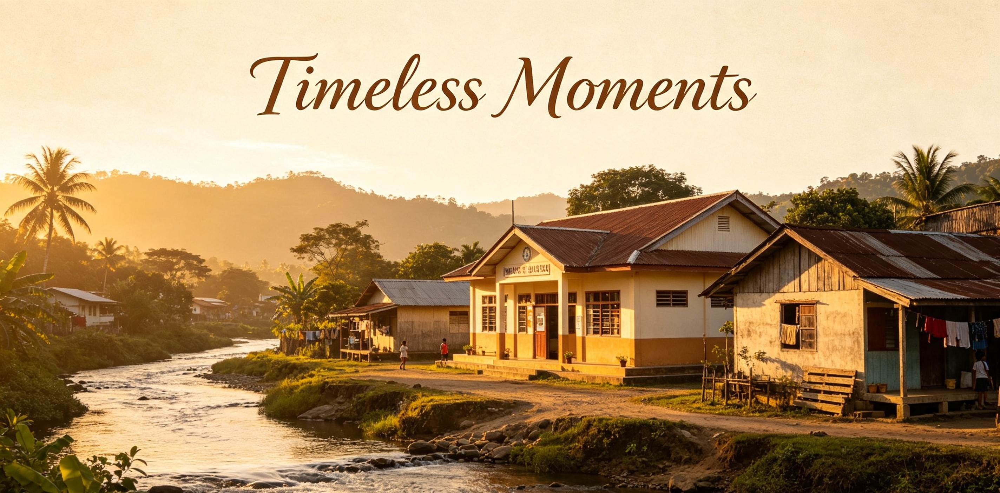
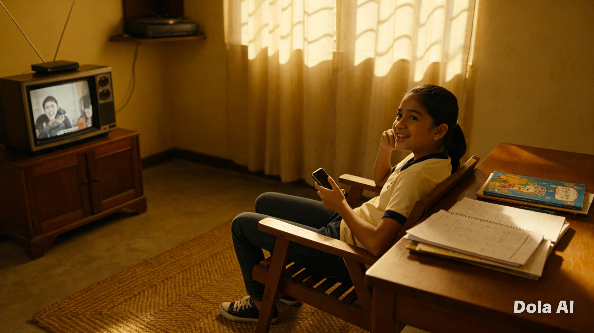
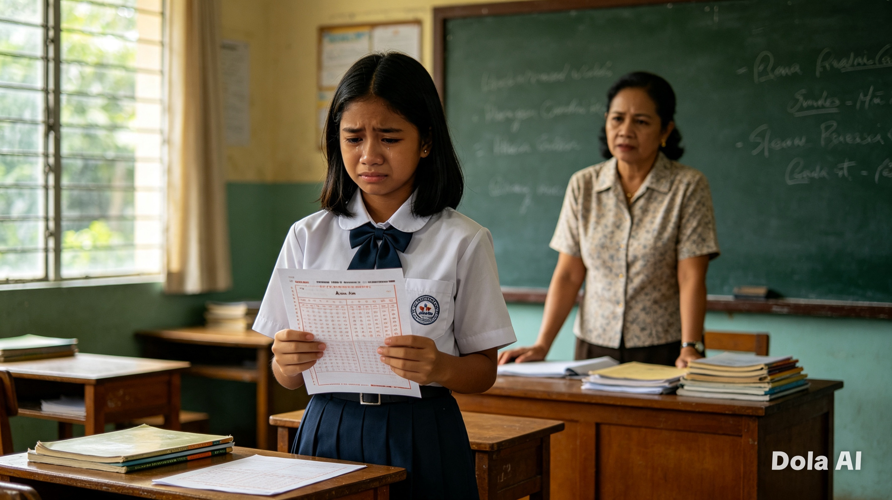
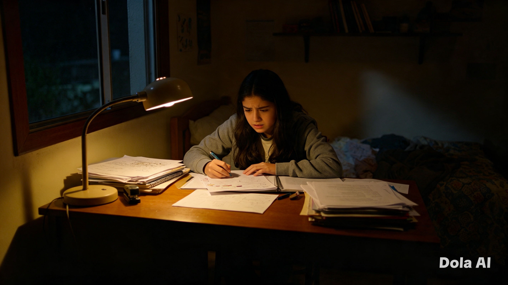
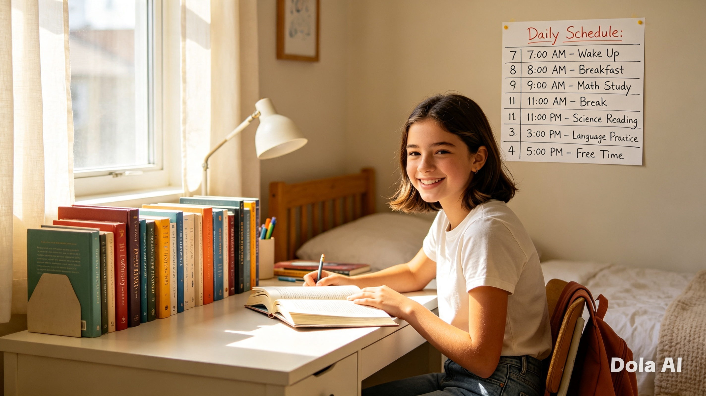

Isang kwento tungkol sa halaga ng panahon, disiplina, at tamang paggamit ng bawat sandali.

Panimula
Si Ana ay isang masipag na estudyante na kilala sa kanilang paaralan dahil sa kanyang husay sa pag‑aaral. Pangarap niyang makatapos at magkaroon ng magandang kinabukasan upang matulungan ang kanyang pamilya. Ngunit habang lumilipas ang panahon, unti‑unti niyang nakalimutan ang halaga ng oras dahil sa dami ng bagay na pinagkakaabalahan.
Ang Pagpapaliban

Pag‑uwi niya mula sa paaralan, madalas niyang inuuna ang panonood ng mga palabas, pakikipag‑usap sa kaibigan, at iba pang bagay na nagbibigay sa kanya ng kasiyahan. Lagi niyang sinasabi sa sarili, “Mamaya ko na gagawin ang aking mga gawain. Marami pa namang oras.”
Ang Pagbabago

Dahil dito, madalas siyang nagpupuyat upang tapusin ang kanyang mga proyekto at takdang‑aralin. Dumating ang panahon na bumaba ang kanyang mga marka at napansin ng kanyang mga guro ang pagbabago sa kanyang pagganap.
Ang Mahalagang Proyekto

Isang araw, nagbigay ang kanilang guro ng isang mahalagang proyekto na kailangan nilang ipasa makalipas ang isang linggo. Tulad ng dati, ipinagpaliban muna ni Ana ang paggawa dahil inisip niyang marami pa siyang oras.
Ngunit dumating ang araw bago ang pasahan at doon niya napagtanto na hindi na sapat ang natitirang panahon. Nagmadali siyang gumawa ngunit dahil sa pagmamadali, hindi niya naibigay ang pinakamahusay niyang kakayahan.
Ang Payo ng Ina
Nang ibalik ng guro ang kanilang proyekto, nalungkot si Ana dahil mababa ang kanyang nakuha. Hindi dahil hindi niya kayang gawin ang gawain, kundi dahil hindi niya ginamit nang tama ang oras na mayroon siya.
Napansin ng kanyang ina ang kanyang kalungkutan at kinausap siya. “Anak, ang oras ay parang tubig na dumadaloy sa ilog. Kapag lumipas na, hindi na ito maaaring ibalik. Kaya dapat natin itong pahalagahan habang mayroon tayo.”
Wakas at Aral

Naisip ni Ana ang lahat ng pagkakataong sinayang niya. Napagtanto niya na ang tagumpay ay hindi lamang nakukuha sa talino at kakayahan, kundi sa disiplina at tamang paggamit ng panahon.
Mula noon, sinimulan niyang ayusin ang kanyang oras. Gumawa siya ng iskedyul para sa pag‑aaral, pahinga, at iba pang gawain. Unti‑unti siyang bumalik sa dating sigla at muling gumanda ang kanyang mga marka.
Sa huli, natutunan ni Ana na ang bawat sandali ay mahalaga. Hindi dapat hintayin ang pagsisisi bago matutunan ang halaga ng panahon.
Aral: Ang oras ay isang kayamanang hindi na mababalik, kaya dapat itong gamitin nang wasto at may pananagutan.